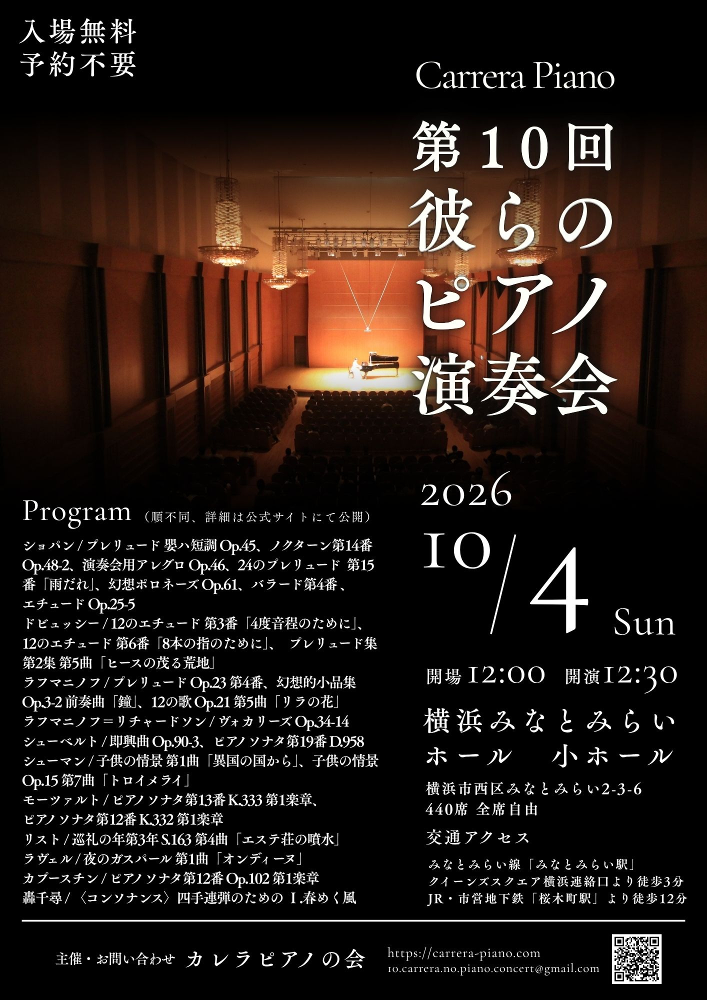

次回公演
第10回 彼らのピアノ演奏会
- 日時
- 2026年10月4日（日） 12:00開場 / 12:30開演
- 会場
- 横浜みなとみらいホール 小ホール
- 入場料
- 無料（予約不要・入退場自由）
- アクセス
- みなとみらい線「みなとみらい駅」クイーンズスクエア横浜連絡口より徒歩3分
JR・市営地下鉄「桜木町駅」より徒歩12分
横浜みなとみらいホール アクセス
プログラム
演奏順は近日公開予定です。
演奏曲目一覧（順不同）
ショパン：プレリュード 嬰ハ短調 Op.45、ノクターン第14番 Op.48-2、演奏会用アレグロ Op.46、24のプレリュード Op.28 第15番「雨だれ」、幻想ポロネーズ Op.61、バラード第4番 Op.52、エチュード Op.25-5
ドビュッシー：12のエチュード 第3番「4度音程のために」、12のエチュード 第6番「8本の指のために」、プレリュード集第2集 第5曲「ヒースの茂る荒地」
ラフマニノフ：プレリュード Op.23 第4番、幻想的小品集 Op.3-2 前奏曲「鐘」、12の歌 Op.21 第5曲「リラの花」
ラフマニノフ（リチャードソン編）：ヴォカリーズ Op.34-14
シューベルト：即興曲 Op.90-3、ピアノソナタ第19番 D.958 第2楽章
シューマン：子供の情景 第1曲「異国の国から」、子供の情景 Op.15 第7曲「トロイメライ」
モーツァルト：ピアノソナタ第13番 K.333 第1楽章、ピアノソナタ第12番 K.332 第1楽章
リスト：巡礼の年第3年 S.163 第4曲「エステ荘の噴水」
ラヴェル：夜のガスパール 第1曲「オンディーヌ」
カプースチン：ピアノソナタ第12番 Op.102 第1楽章
轟千尋：〈コンソナンス〉四手連弾のための Ⅰ.春めく風
ご来場にあたって
- 演奏中の客席への出入りはご遠慮ください。曲間にお願いいたします。
- 携帯電話・スマートフォンは電源をお切りいただくか、サイレントモードに設定をお願いします。
- 客席内での飲食はできません。
- 会場には駐車場がございません。公共交通機関でお越しください。
- 花束等の贈呈はお受けしておりません。
チラシ

最新の公演記録
第9回 彼らのピアノ演奏会
- 日時
- 2025年9月13日（土） 12:30開演
- 会場
- 鎌倉芸術館 小ホール
- 来場者数
- 100名
- 入場料
- 無料（予約不要・入退場自由）
プログラム
全プログラムを見る（4部構成・全19曲）
メンデルスゾーン、バーバー、シューベルト、ショパン、ラフマニノフ、ドビュッシー、ベートーヴェン、ラヴェルなど、古典派からロマン派・近現代まで幅広いプログラム。
過去の公演
| 回 | 日付 | 会場 | 来場者 |
|---|---|---|---|
| 第9回 | 2025年9月13日 | 鎌倉芸術館 小ホール | 100名 |
| 第8回 | 2024年6月8日 | すみだトリフォニーホール 小ホール | 90名 |
| 第7回 | 2023年7月17日 | 五反田文化センター 音楽ホール | - |
| 第6回 | 2022年8月21日 | - | - |
| 第5回 | 2021年10月2日 | - | - |
| 第4回 | 2019年9月7日 | - | - |
| 第3回 | 2018年9月2日 | - | - |
| 第2回 | 2017年9月30日 | - | - |
| 第1回 | 2017年1月8日 | - | - |